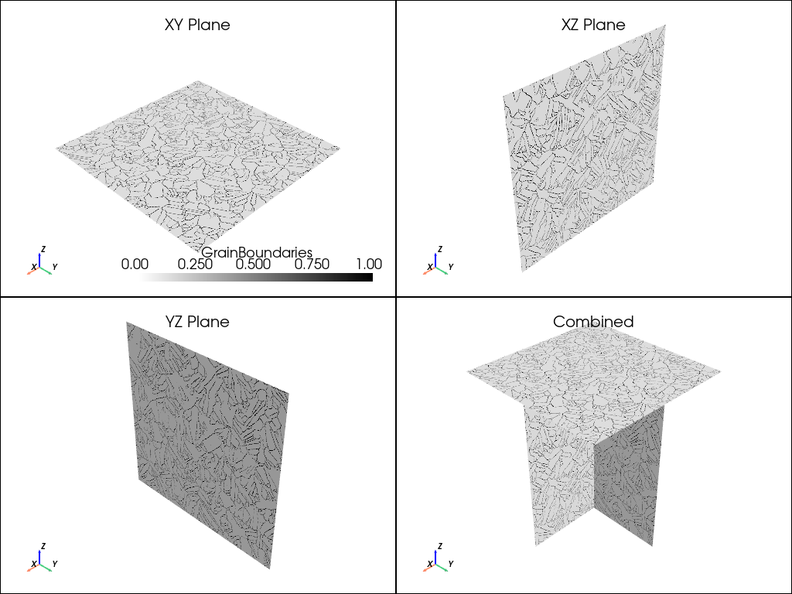
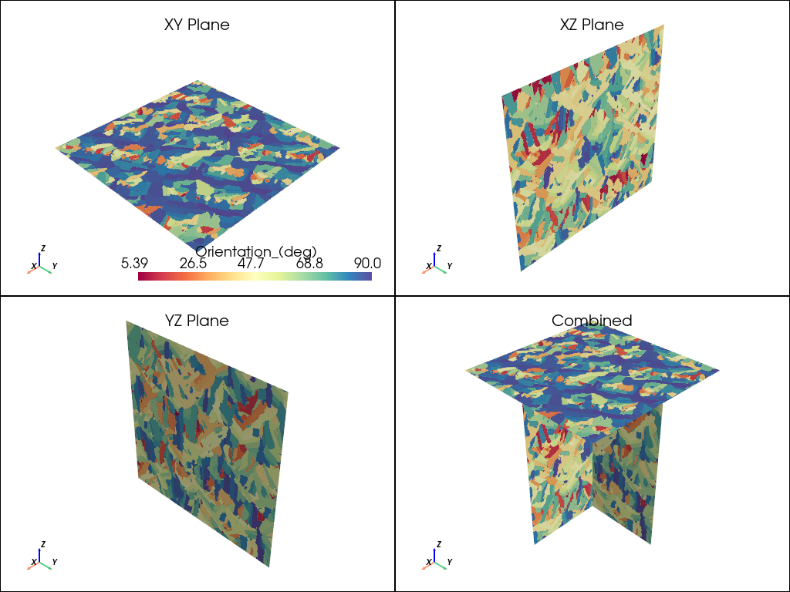
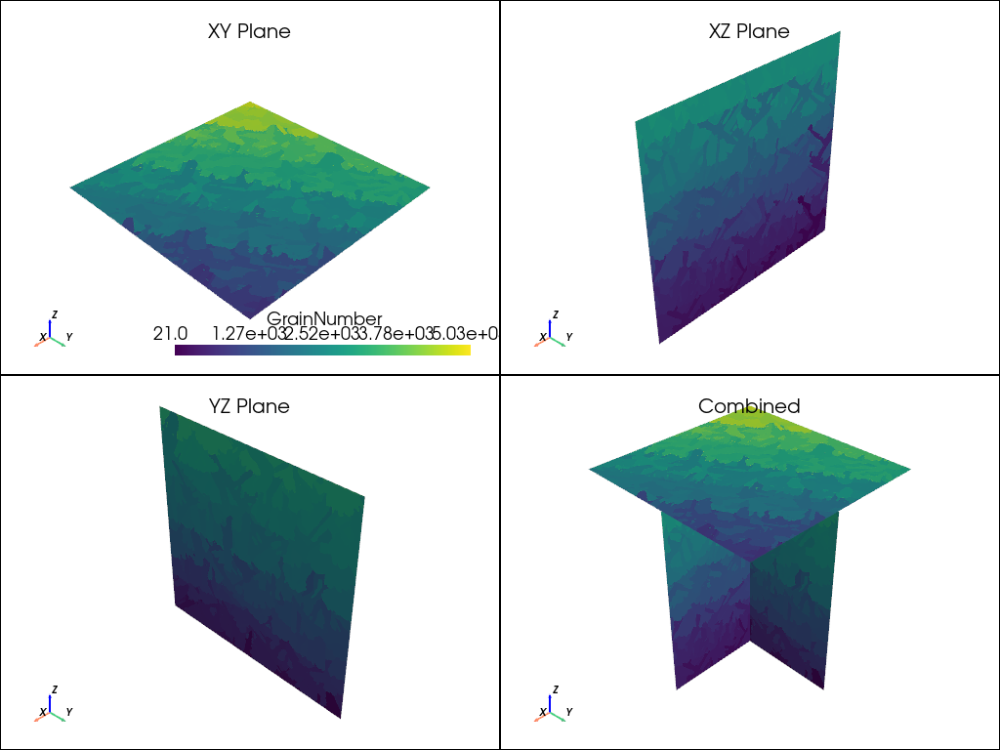

Note
Go to the end to download the full example code.
2D Microstructure analysis#
This example shows how to use PyAdditive to determine the two-dimensional microstructure in the XY, XZ, and YZ planes for a sample coupon with given material and machine parameters.
Units are SI (m, kg, s, K) unless otherwise noted.
Perform required import and connect#
Perform the required import and connect to the Additive service.
from ansys.additive.core import (
Additive,
AdditiveMachine,
MicrostructureInput,
SimulationError,
)
additive = Additive()
Select material#
Select a material. You can use the materials_list() method to
obtain a list of available materials.
print("Available material names: {}".format(additive.materials_list()))
Available material names: ['IN718', '17-4PH', 'Al357', 'Ti64', 'CoCr', '316L', 'IN625', 'AlSi10Mg']
You can obtain the parameters for a single material by passing a name
from the materials list to the material() method.
material = additive.material("17-4PH")
Specify machine parameters#
Specify machine parameters by first creating an AdditiveMachine object
and then assigning the desired values. All values are in SI units (m, kg, s, K)
unless otherwise noted.
machine = AdditiveMachine()
# Show available parameters
print(machine)
AdditiveMachine
laser_power: 195 W
scan_speed: 1.0 m/s
heater_temperature: 80 °C
layer_thickness: 5e-05 m
beam_diameter: 0.0001 m
starting_layer_angle: 57 °
layer_rotation_angle: 67 °
hatch_spacing: 0.0001 m
slicing_stripe_width: 0.01 m
Set laser power and scan speed#
Set the laser power and scan speed.
machine.scan_speed = 1 # m/s
machine.laser_power = 500 # W
Specify inputs for microstructure simulation#
Microstructure simulation inputs can include thermal parameters.
Thermal parameters consist of cooling_rate, thermal_gradient,
melt_pool_width, and melt_pool_depth. If thermal parameters are not
specified, the thermal solver is used to obtain the parameters prior
to running the microstructure solver.
# Specify microstructure inputs with thermal parameters
input_with_thermal = MicrostructureInput(
machine=machine,
material=material,
sensor_dimension=0.0005,
sample_size_x=0.001, # in meters (1 mm), must be >= sensor_dimension + 0.0005
sample_size_y=0.001, # in meters (1 mm), must be >= sensor_dimension + 0.0005
sample_size_z=0.0015, # in meters (1 mm), must be >= sensor_dimension + 0.001
use_provided_thermal_parameters=True,
cooling_rate=1.1e6, # °K/s
thermal_gradient=1.2e7, # °K/m
melt_pool_width=1.5e-4, # meters (150 microns)
melt_pool_depth=1.1e-4, # meters (110 microns)
)
# Specify microstructure inputs without thermal parameters
input_without_thermal = MicrostructureInput(
machine=machine,
material=material,
sensor_dimension=0.0005,
sample_size_x=0.001, # in meters (1 mm), must be >= sensor_dimension + 0.0005
sample_size_y=0.001, # in meters (1 mm), must be >= sensor_dimension + 0.0005
sample_size_z=0.0015, # in meters (1 mm), must be >= sensor_dimension + 0.001
# use_provided_thermal_parameters defaults to False
)
Run simulation#
Use the simulate() method of the additive object to run the simulation.
The returned object is either a MicrostructureSummary object or a
SimulationError object.
summary = additive.simulate(input_with_thermal)
if isinstance(summary, SimulationError):
raise Exception(summary.message)
Plot results#
The summary` object includes three VTK files, one for each of the
XY, XZ, and YZ planes. Each VTK file contains data sets for grain orientation,
boundaries, and number. In addition, the summary object
includes circle equivalence data and average grain size for each plane.
See MicrostructureSummary for details.
import matplotlib.pyplot as plt
import pandas as pd
import pyvista as pv
from matplotlib import colors
from matplotlib.colors import LinearSegmentedColormap as colorMap
from matplotlib.ticker import PercentFormatter
from ansys.additive.core import CircleEquivalenceColumnNames
Plot 2D grain visualizations#
Plot the planar data, read VTK data in data set objects, and create a color map to use with the boundary map.
# Function to plot the planar data
def plot_microstructure(
xy_data: any,
xz_data: any,
yz_data: any,
scalars: str,
cmap: colors.LinearSegmentedColormap,
):
"""Convenience function to plot microstructure VTK data."""
font_size = 8
plotter = pv.Plotter(shape=(2, 2), lighting="three lights")
plotter.show_axes_all()
plotter.add_mesh(xy_data, cmap=cmap, scalars=scalars)
plotter.add_title("XY Plane", font_size=font_size)
plotter.subplot(0, 1)
plotter.add_mesh(xz_data, cmap=cmap, scalars=scalars)
plotter.add_title("XZ Plane", font_size=font_size)
plotter.subplot(1, 0)
plotter.add_mesh(yz_data, cmap=cmap, scalars=scalars)
plotter.add_title("YZ Plane", font_size=font_size)
plotter.subplot(1, 1)
plotter.add_mesh(xy_data, cmap=cmap, scalars=scalars)
plotter.add_mesh(xz_data, cmap=cmap, scalars=scalars)
plotter.add_mesh(yz_data, cmap=cmap, scalars=scalars)
plotter.add_title("Combined", font_size=font_size)
return plotter
# Read VTK data into pyvista.DataSet objects
xy = pv.read(summary.xy_vtk)
xz = pv.read(summary.xz_vtk)
yz = pv.read(summary.yz_vtk)
# Create a color map to use with the boundary plot
white_black_cmap = colorMap.from_list("whiteblack", ["white", "black"])
plot_microstructure(xy, xz, yz, "GrainBoundaries", white_black_cmap).show(
title="Grain Boundaries"
)
plot_microstructure(xy, xz, yz, "Orientation_(deg)", "spectral").show(
title="Orientation °"
)
plot_microstructure(xy, xz, yz, "GrainNumber", None).show(title="Grain Number")
- 
- 
- 
Plot grain statistics#
Add grain statistic plots to a figure, create a figure for grain statistics, and then plot the figure.
# Function to simplify plotting grain statistics
def add_grain_statistics_to_figure(
plane_data: pd.DataFrame,
plane_str: str,
plane_ave_grain_size: float,
diameter_axes: plt.Axes,
orientation_axes: plt.Axes,
):
"""Convenience function to add grain statistic plots to a figure."""
xmax = len(plane_data[CircleEquivalenceColumnNames.DIAMETER])
diameter_axes.hist(
plane_data[CircleEquivalenceColumnNames.DIAMETER], bins=20, rwidth=0.75
)
diameter_axes.set_xlabel("Grain Diameter (µm)")
diameter_axes.set_ylabel("Area Fraction")
diameter_axes.set_title(
plane_str.upper()
+ f" Grain Size Distribution, ave: {plane_ave_grain_size:.2f} µm"
)
diameter_axes.yaxis.set_major_formatter(PercentFormatter(xmax=xmax))
orientation_axes.hist(
plane_data[CircleEquivalenceColumnNames.ORIENTATION_ANGLE], bins=9, rwidth=0.75
)
orientation_axes.yaxis.set_major_formatter(PercentFormatter(xmax=xmax))
orientation_axes.set_xlabel("Orientation Angle (°)")
orientation_axes.set_ylabel("Number Fraction")
orientation_axes.set_title(plane_str.upper() + " Orientation Angle")
# Create figure for grain statistics
fig, axs = plt.subplots(3, 2, figsize=(10, 15), tight_layout=True)
fig.suptitle("Circle Equivalence Grain Data", fontsize=16)
add_grain_statistics_to_figure(
summary.xy_circle_equivalence,
"xy",
summary.xy_average_grain_size,
axs[0][0],
axs[0][1],
)
add_grain_statistics_to_figure(
summary.xz_circle_equivalence,
"xz",
summary.xz_average_grain_size,
axs[1][0],
axs[1][1],
)
add_grain_statistics_to_figure(
summary.yz_circle_equivalence,
"yz",
summary.yz_average_grain_size,
axs[2][0],
axs[2][1],
)
plt.show()
Print the simulation logs#
To print the simulation logs, use the logs() property.
print(summary.logs)
File: microstructure-log.log
Thu May 29 21:41:40 2025 -> SOLVERINFO: MeshSpacing: 1.000000e-06
Thu May 29 21:41:40 2025 -> SOLVERINFO: LaserSpeed: 1.000000e+00
Thu May 29 21:41:40 2025 -> SOLVERINFO: DepositLayerThickness: 5.000000e-05
Thu May 29 21:41:40 2025 -> SOLVERINFO: BoundaryMultiplier: 1.000000e+00
Thu May 29 21:41:40 2025 -> SOLVERINFO: BorderGrainBoundaries: 10
Thu May 29 21:41:40 2025 -> SOLVERINFO: KineticAnisotropy: 7.000000e-01
Thu May 29 21:41:40 2025 -> SOLVERINFO: InterfaceKinematicCoefficient: 2.000000e-03
Thu May 29 21:41:40 2025 -> SOLVERINFO: GibbsThomsonCoefficient: 1.700000e-07
Thu May 29 21:41:40 2025 -> SOLVERINFO: NucleationConstantInterface: 2.377834e+00
Thu May 29 21:41:40 2025 -> SOLVERINFO: NucleationConstantBulk: 2.844440e+04
Thu May 29 21:41:40 2025 -> SOLVERINFO: b0: 0.800000
Thu May 29 21:41:40 2025 -> SOLVERINFO: XYPlaneRotationAngleInfluence: 1
Thu May 29 21:41:40 2025 -> SOLVERINFO: ScanFilePath: /tmp/additive/610ac0d1ccf41/hatch-files/LaserPosition
Thu May 29 21:41:40 2025 -> SOLVERINFO: OutputPath:
Thu May 29 21:41:40 2025 -> SOLVERINFO: sensorid: 1
Thu May 29 21:41:40 2025 -> SOLVERINFO: x: 5.000000e-04
Thu May 29 21:41:40 2025 -> SOLVERINFO: y: 5.000000e-04
Thu May 29 21:41:40 2025 -> SOLVERINFO: z: 5.000000e-04
Thu May 29 21:41:40 2025 -> SOLVERINFO: length: 5.000000e-04
Thu May 29 21:41:40 2025 -> SOLVERINFO: meltpoolwidth: 1.500000e-04
Thu May 29 21:41:40 2025 -> SOLVERINFO: meltpooldepth: 1.100000e-04
Thu May 29 21:41:40 2025 -> SOLVERINFO: thermalgradient: 1.200000e+07
Thu May 29 21:41:40 2025 -> SOLVERINFO: coolingrate: 1.100000e+06
Thu May 29 21:41:40 2025 -> SOLVERINFO: SensorOutputPrefix: /tmp/additive/610ac0d1ccf41/microstructure/Microstructure
Thu May 29 21:41:40 2025 -> SOLVERINFO: OracleType: uniform-parallel
Thu May 29 21:41:40 2025 -> SOLVERINFO: OracleNumberFile: ./randnum.csv
Thu May 29 21:41:40 2025 -> SOLVERINFO: RNGSeed: 1498906651
Thu May 29 21:41:42 2025 -> DESKTOPINFO: License successfully obtained.
Thu May 29 21:41:42 2025 -> SOLVERINFO: Skipping HPC license checkout as 4 are being requested.
Thu May 29 21:41:42 2025 -> USERINFO: Starting MicrostructureSolver v15.1.4, SolverCommon v14.108.0
Thu May 29 21:41:42 2025 -> SOLVERINFO: Begin Run
Thu May 29 21:41:42 2025 -> DESKTOPINFO: Using 4 threads for solver
Thu May 29 21:41:42 2025 -> SOLVERINFO: Total Number of Sensors: 1
Thu May 29 21:41:42 2025 -> SOLVERINFO: Run Sensor 1
Thu May 29 21:41:42 2025 -> SOLVERINFO: Layers to read:
Thu May 29 21:41:42 2025 -> SOLVERINFO: Bottom of sensor layer index = 0
Thu May 29 21:41:42 2025 -> SOLVERINFO: Top of sensor layer index = 9
Thu May 29 21:41:42 2025 -> SOLVERINFO: Layer index for remelting sensor = 11
Thu May 29 21:41:42 2025 -> SOLVERINFO: Oracle for plane id 0 received seed of 1498910084
Thu May 29 21:41:42 2025 -> SOLVERINFO: Thread 0 gets seed: 1498910084
Thu May 29 21:41:42 2025 -> SOLVERINFO: Thread 1 gets seed: 1498910163
Thu May 29 21:41:42 2025 -> SOLVERINFO: Thread 2 gets seed: 1498910242
Thu May 29 21:41:42 2025 -> SOLVERINFO: Thread 3 gets seed: 1498910321
Thu May 29 21:41:42 2025 -> SOLVERINFO: Longitude Line Solver took 240 steps out of 5656 max allowed.
Thu May 29 21:41:42 2025 -> SOLVERINFO: Longitude Line Solver took 340 steps out of 6268 max allowed.
Thu May 29 21:41:43 2025 -> SOLVERINFO: Longitude Line Solver took 260 steps out of 6268 max allowed.
Thu May 29 21:41:43 2025 -> SOLVERINFO: Longitude Line Solver took 280 steps out of 6268 max allowed.
Thu May 29 21:41:43 2025 -> SOLVERINFO: Longitude Line Solver took 280 steps out of 6268 max allowed.
Thu May 29 21:41:43 2025 -> SOLVERINFO: Longitude Line Solver took 260 steps out of 6268 max allowed.
Thu May 29 21:41:44 2025 -> SOLVERINFO: Longitude Line Solver took 280 steps out of 6268 max allowed.
Thu May 29 21:41:44 2025 -> SOLVERINFO: Longitude Line Solver took 260 steps out of 6268 max allowed.
Thu May 29 21:41:44 2025 -> SOLVERINFO: Longitude Line Solver took 240 steps out of 6156 max allowed.
Thu May 29 21:41:44 2025 -> SOLVERINFO: PercentComplete: 33.3
Thu May 29 21:41:44 2025 -> SOLVERINFO: Oracle for plane id 1 received seed of 1498910085
Thu May 29 21:41:44 2025 -> SOLVERINFO: Thread 0 gets seed: 1498910085
Thu May 29 21:41:44 2025 -> SOLVERINFO: Thread 1 gets seed: 1498910164
Thu May 29 21:41:44 2025 -> SOLVERINFO: Thread 2 gets seed: 1498910243
Thu May 29 21:41:44 2025 -> SOLVERINFO: Thread 3 gets seed: 1498910322
Thu May 29 21:41:44 2025 -> SOLVERINFO: Starting layer (relative index): 0
Thu May 29 21:41:44 2025 -> SOLVERINFO: Latitude Line Solver took 276 steps out of 1408 max allowed.
Thu May 29 21:41:45 2025 -> SOLVERINFO: Latitude Line Solver took 280 steps out of 1408 max allowed.
Thu May 29 21:41:45 2025 -> SOLVERINFO: Latitude Line Solver took 266 steps out of 1408 max allowed.
Thu May 29 21:41:45 2025 -> SOLVERINFO: Latitude Line Solver took 265 steps out of 1408 max allowed.
Thu May 29 21:41:45 2025 -> SOLVERINFO: Latitude Line Solver took 283 steps out of 1408 max allowed.
Thu May 29 21:41:45 2025 -> SOLVERINFO: PercentComplete: 36
Thu May 29 21:41:45 2025 -> SOLVERINFO: Starting layer (relative index): 1
Thu May 29 21:41:45 2025 -> SOLVERINFO: Latitude Line Solver took 245 steps out of 1420 max allowed.
Thu May 29 21:41:45 2025 -> SOLVERINFO: Latitude Line Solver took 250 steps out of 1420 max allowed.
Thu May 29 21:41:45 2025 -> SOLVERINFO: Latitude Line Solver took 262 steps out of 1420 max allowed.
Thu May 29 21:41:45 2025 -> SOLVERINFO: Latitude Line Solver took 256 steps out of 1420 max allowed.
Thu May 29 21:41:45 2025 -> SOLVERINFO: Latitude Line Solver took 264 steps out of 1420 max allowed.
Thu May 29 21:41:45 2025 -> SOLVERINFO: PercentComplete: 38.8
Thu May 29 21:41:45 2025 -> SOLVERINFO: Starting layer (relative index): 2
Thu May 29 21:41:45 2025 -> SOLVERINFO: Latitude Line Solver took 460 steps out of 5298 max allowed.
Thu May 29 21:41:45 2025 -> SOLVERINFO: PercentComplete: 41.6
Thu May 29 21:41:45 2025 -> SOLVERINFO: Starting layer (relative index): 3
Thu May 29 21:41:45 2025 -> SOLVERINFO: Latitude Line Solver took 218 steps out of 1264 max allowed.
Thu May 29 21:41:45 2025 -> SOLVERINFO: Latitude Line Solver took 230 steps out of 1264 max allowed.
Thu May 29 21:41:45 2025 -> SOLVERINFO: Latitude Line Solver took 220 steps out of 1264 max allowed.
Thu May 29 21:41:45 2025 -> SOLVERINFO: Latitude Line Solver took 249 steps out of 1264 max allowed.
Thu May 29 21:41:45 2025 -> SOLVERINFO: Latitude Line Solver took 217 steps out of 1264 max allowed.
Thu May 29 21:41:45 2025 -> SOLVERINFO: Latitude Line Solver took 272 steps out of 1264 max allowed.
Thu May 29 21:41:45 2025 -> SOLVERINFO: PercentComplete: 44.4
Thu May 29 21:41:45 2025 -> SOLVERINFO: Starting layer (relative index): 4
Thu May 29 21:41:46 2025 -> SOLVERINFO: Latitude Line Solver took 327 steps out of 1902 max allowed.
Thu May 29 21:41:46 2025 -> SOLVERINFO: Latitude Line Solver took 360 steps out of 1902 max allowed.
Thu May 29 21:41:46 2025 -> SOLVERINFO: Latitude Line Solver took 326 steps out of 1902 max allowed.
Thu May 29 21:41:46 2025 -> SOLVERINFO: Latitude Line Solver took 320 steps out of 1902 max allowed.
Thu May 29 21:41:46 2025 -> SOLVERINFO: Latitude Line Solver took 320 steps out of 1902 max allowed.
Thu May 29 21:41:46 2025 -> SOLVERINFO: PercentComplete: 47.1
Thu May 29 21:41:46 2025 -> SOLVERINFO: Starting layer (relative index): 5
Thu May 29 21:41:46 2025 -> SOLVERINFO: Latitude Line Solver took 328 steps out of 2032 max allowed.
Thu May 29 21:41:46 2025 -> SOLVERINFO: Latitude Line Solver took 346 steps out of 2032 max allowed.
Thu May 29 21:41:46 2025 -> SOLVERINFO: Latitude Line Solver took 340 steps out of 2032 max allowed.
Thu May 29 21:41:46 2025 -> SOLVERINFO: Latitude Line Solver took 367 steps out of 2032 max allowed.
Thu May 29 21:41:46 2025 -> SOLVERINFO: PercentComplete: 49.9
Thu May 29 21:41:46 2025 -> SOLVERINFO: Starting layer (relative index): 6
Thu May 29 21:41:46 2025 -> SOLVERINFO: Latitude Line Solver took 220 steps out of 1260 max allowed.
Thu May 29 21:41:46 2025 -> SOLVERINFO: Latitude Line Solver took 220 steps out of 1260 max allowed.
Thu May 29 21:41:46 2025 -> SOLVERINFO: Latitude Line Solver took 253 steps out of 1260 max allowed.
Thu May 29 21:41:46 2025 -> SOLVERINFO: Latitude Line Solver took 200 steps out of 1260 max allowed.
Thu May 29 21:41:46 2025 -> SOLVERINFO: Latitude Line Solver took 229 steps out of 1260 max allowed.
Thu May 29 21:41:46 2025 -> SOLVERINFO: Latitude Line Solver took 238 steps out of 1260 max allowed.
Thu May 29 21:41:46 2025 -> SOLVERINFO: PercentComplete: 52.7
Thu May 29 21:41:46 2025 -> SOLVERINFO: Starting layer (relative index): 7
Thu May 29 21:41:47 2025 -> SOLVERINFO: Latitude Line Solver took 424 steps out of 4204 max allowed.
Thu May 29 21:41:47 2025 -> SOLVERINFO: Latitude Line Solver took 420 steps out of 4204 max allowed.
Thu May 29 21:41:47 2025 -> SOLVERINFO: Latitude Line Solver took 480 steps out of 4204 max allowed.
Thu May 29 21:41:47 2025 -> SOLVERINFO: PercentComplete: 55.5
Thu May 29 21:41:47 2025 -> SOLVERINFO: Starting layer (relative index): 8
Thu May 29 21:41:47 2025 -> SOLVERINFO: Latitude Line Solver took 284 steps out of 1460 max allowed.
Thu May 29 21:41:47 2025 -> SOLVERINFO: Latitude Line Solver took 300 steps out of 1460 max allowed.
Thu May 29 21:41:47 2025 -> SOLVERINFO: Latitude Line Solver took 265 steps out of 1460 max allowed.
Thu May 29 21:41:47 2025 -> SOLVERINFO: Latitude Line Solver took 260 steps out of 1460 max allowed.
Thu May 29 21:41:47 2025 -> SOLVERINFO: Latitude Line Solver took 242 steps out of 1460 max allowed.
Thu May 29 21:41:47 2025 -> SOLVERINFO: Latitude Line Solver took 289 steps out of 1460 max allowed.
Thu May 29 21:41:47 2025 -> SOLVERINFO: PercentComplete: 58.2
Thu May 29 21:41:47 2025 -> SOLVERINFO: Starting layer (relative index): 9
Thu May 29 21:41:47 2025 -> SOLVERINFO: Latitude Line Solver took 244 steps out of 1374 max allowed.
Thu May 29 21:41:47 2025 -> SOLVERINFO: Latitude Line Solver took 238 steps out of 1374 max allowed.
Thu May 29 21:41:47 2025 -> SOLVERINFO: Latitude Line Solver took 244 steps out of 1374 max allowed.
Thu May 29 21:41:47 2025 -> SOLVERINFO: Latitude Line Solver took 231 steps out of 1374 max allowed.
Thu May 29 21:41:48 2025 -> SOLVERINFO: Latitude Line Solver took 249 steps out of 1374 max allowed.
Thu May 29 21:41:48 2025 -> SOLVERINFO: Latitude Line Solver took 257 steps out of 1374 max allowed.
Thu May 29 21:41:48 2025 -> SOLVERINFO: PercentComplete: 61
Thu May 29 21:41:48 2025 -> SOLVERINFO: Starting layer (relative index): 10
Thu May 29 21:41:48 2025 -> SOLVERINFO: Longitude Line Solver took 460 steps out of 4388 max allowed.
Thu May 29 21:41:48 2025 -> SOLVERINFO: PercentComplete: 63.8
Thu May 29 21:41:48 2025 -> SOLVERINFO: Starting layer (relative index): 11
Thu May 29 21:41:48 2025 -> SOLVERINFO: Latitude Line Solver took 224 steps out of 1280 max allowed.
Thu May 29 21:41:48 2025 -> SOLVERINFO: Latitude Line Solver took 227 steps out of 1280 max allowed.
Thu May 29 21:41:48 2025 -> SOLVERINFO: Latitude Line Solver took 231 steps out of 1280 max allowed.
Thu May 29 21:41:48 2025 -> SOLVERINFO: Latitude Line Solver took 233 steps out of 1280 max allowed.
Thu May 29 21:41:48 2025 -> SOLVERINFO: Latitude Line Solver took 220 steps out of 1280 max allowed.
Thu May 29 21:41:48 2025 -> SOLVERINFO: Latitude Line Solver took 224 steps out of 1280 max allowed.
Thu May 29 21:41:48 2025 -> SOLVERINFO: PercentComplete: 66.6
Thu May 29 21:41:48 2025 -> SOLVERINFO: Oracle for plane id 2 received seed of 1498910086
Thu May 29 21:41:48 2025 -> SOLVERINFO: Thread 0 gets seed: 1498910086
Thu May 29 21:41:48 2025 -> SOLVERINFO: Thread 1 gets seed: 1498910165
Thu May 29 21:41:48 2025 -> SOLVERINFO: Thread 2 gets seed: 1498910244
Thu May 29 21:41:48 2025 -> SOLVERINFO: Thread 3 gets seed: 1498910323
Thu May 29 21:41:48 2025 -> SOLVERINFO: Starting layer (relative index): 0
Thu May 29 21:41:48 2025 -> SOLVERINFO: Latitude Line Solver took 340 steps out of 1982 max allowed.
Thu May 29 21:41:48 2025 -> SOLVERINFO: Latitude Line Solver took 369 steps out of 1982 max allowed.
Thu May 29 21:41:49 2025 -> SOLVERINFO: Latitude Line Solver took 312 steps out of 1982 max allowed.
Thu May 29 21:41:49 2025 -> SOLVERINFO: Latitude Line Solver took 350 steps out of 1982 max allowed.
Thu May 29 21:41:49 2025 -> SOLVERINFO: Latitude Line Solver took 339 steps out of 1982 max allowed.
Thu May 29 21:41:49 2025 -> SOLVERINFO: PercentComplete: 69.3
Thu May 29 21:41:49 2025 -> SOLVERINFO: Starting layer (relative index): 1
Thu May 29 21:41:49 2025 -> SOLVERINFO: Latitude Line Solver took 331 steps out of 1940 max allowed.
Thu May 29 21:41:49 2025 -> SOLVERINFO: Latitude Line Solver took 340 steps out of 1940 max allowed.
Thu May 29 21:41:49 2025 -> SOLVERINFO: Latitude Line Solver took 351 steps out of 1940 max allowed.
Thu May 29 21:41:49 2025 -> SOLVERINFO: Latitude Line Solver took 343 steps out of 1940 max allowed.
Thu May 29 21:41:49 2025 -> SOLVERINFO: Latitude Line Solver took 328 steps out of 1940 max allowed.
Thu May 29 21:41:49 2025 -> SOLVERINFO: PercentComplete: 72.1
Thu May 29 21:41:49 2025 -> SOLVERINFO: Starting layer (relative index): 2
Thu May 29 21:41:49 2025 -> SOLVERINFO: Latitude Line Solver took 228 steps out of 1264 max allowed.
Thu May 29 21:41:49 2025 -> SOLVERINFO: Latitude Line Solver took 239 steps out of 1264 max allowed.
Thu May 29 21:41:49 2025 -> SOLVERINFO: Latitude Line Solver took 231 steps out of 1264 max allowed.
Thu May 29 21:41:49 2025 -> SOLVERINFO: Latitude Line Solver took 223 steps out of 1264 max allowed.
Thu May 29 21:41:49 2025 -> SOLVERINFO: Latitude Line Solver took 256 steps out of 1264 max allowed.
Thu May 29 21:41:49 2025 -> SOLVERINFO: Latitude Line Solver took 224 steps out of 1264 max allowed.
Thu May 29 21:41:49 2025 -> SOLVERINFO: Latitude Line Solver took 226 steps out of 1264 max allowed.
Thu May 29 21:41:49 2025 -> SOLVERINFO: PercentComplete: 74.9
Thu May 29 21:41:49 2025 -> SOLVERINFO: Starting layer (relative index): 3
Thu May 29 21:41:50 2025 -> SOLVERINFO: Latitude Line Solver took 432 steps out of 4868 max allowed.
Thu May 29 21:41:50 2025 -> SOLVERINFO: Latitude Line Solver took 460 steps out of 4868 max allowed.
Thu May 29 21:41:50 2025 -> SOLVERINFO: PercentComplete: 77.7
Thu May 29 21:41:50 2025 -> SOLVERINFO: Starting layer (relative index): 4
Thu May 29 21:41:50 2025 -> SOLVERINFO: Latitude Line Solver took 283 steps out of 1432 max allowed.
Thu May 29 21:41:50 2025 -> SOLVERINFO: Latitude Line Solver took 272 steps out of 1432 max allowed.
Thu May 29 21:41:50 2025 -> SOLVERINFO: Latitude Line Solver took 280 steps out of 1432 max allowed.
Thu May 29 21:41:50 2025 -> SOLVERINFO: Latitude Line Solver took 264 steps out of 1432 max allowed.
Thu May 29 21:41:50 2025 -> SOLVERINFO: Latitude Line Solver took 279 steps out of 1432 max allowed.
Thu May 29 21:41:50 2025 -> SOLVERINFO: PercentComplete: 80.5
Thu May 29 21:41:50 2025 -> SOLVERINFO: Starting layer (relative index): 5
Thu May 29 21:41:50 2025 -> SOLVERINFO: Latitude Line Solver took 280 steps out of 1398 max allowed.
Thu May 29 21:41:50 2025 -> SOLVERINFO: Latitude Line Solver took 253 steps out of 1398 max allowed.
Thu May 29 21:41:50 2025 -> SOLVERINFO: Latitude Line Solver took 245 steps out of 1398 max allowed.
Thu May 29 21:41:50 2025 -> SOLVERINFO: Latitude Line Solver took 280 steps out of 1398 max allowed.
Thu May 29 21:41:50 2025 -> SOLVERINFO: Latitude Line Solver took 265 steps out of 1398 max allowed.
Thu May 29 21:41:50 2025 -> SOLVERINFO: Latitude Line Solver took 264 steps out of 1398 max allowed.
Thu May 29 21:41:50 2025 -> SOLVERINFO: PercentComplete: 83.3
Thu May 29 21:41:50 2025 -> SOLVERINFO: Starting layer (relative index): 6
Thu May 29 21:41:51 2025 -> SOLVERINFO: Longitude Line Solver took 420 steps out of 4376 max allowed.
Thu May 29 21:41:51 2025 -> SOLVERINFO: Longitude Line Solver took 440 steps out of 4388 max allowed.
Thu May 29 21:41:51 2025 -> SOLVERINFO: PercentComplete: 86
Thu May 29 21:41:51 2025 -> SOLVERINFO: Starting layer (relative index): 7
Thu May 29 21:41:51 2025 -> SOLVERINFO: Latitude Line Solver took 217 steps out of 1276 max allowed.
Thu May 29 21:41:51 2025 -> SOLVERINFO: Latitude Line Solver took 260 steps out of 1276 max allowed.
Thu May 29 21:41:51 2025 -> SOLVERINFO: Latitude Line Solver took 247 steps out of 1276 max allowed.
Thu May 29 21:41:51 2025 -> SOLVERINFO: Latitude Line Solver took 214 steps out of 1276 max allowed.
Thu May 29 21:41:51 2025 -> SOLVERINFO: Latitude Line Solver took 219 steps out of 1276 max allowed.
Thu May 29 21:41:51 2025 -> SOLVERINFO: Latitude Line Solver took 260 steps out of 1276 max allowed.
Thu May 29 21:41:51 2025 -> SOLVERINFO: Latitude Line Solver took 225 steps out of 1276 max allowed.
Thu May 29 21:41:51 2025 -> SOLVERINFO: PercentComplete: 88.8
Thu May 29 21:41:51 2025 -> SOLVERINFO: Starting layer (relative index): 8
Thu May 29 21:41:51 2025 -> SOLVERINFO: Latitude Line Solver took 351 steps out of 1822 max allowed.
Thu May 29 21:41:51 2025 -> SOLVERINFO: Latitude Line Solver took 311 steps out of 1822 max allowed.
Thu May 29 21:41:51 2025 -> SOLVERINFO: Latitude Line Solver took 325 steps out of 1822 max allowed.
Thu May 29 21:41:51 2025 -> SOLVERINFO: Latitude Line Solver took 320 steps out of 1822 max allowed.
Thu May 29 21:41:51 2025 -> SOLVERINFO: PercentComplete: 91.6
Thu May 29 21:41:51 2025 -> SOLVERINFO: Starting layer (relative index): 9
Thu May 29 21:41:51 2025 -> SOLVERINFO: Latitude Line Solver took 354 steps out of 2138 max allowed.
Thu May 29 21:41:52 2025 -> SOLVERINFO: Latitude Line Solver took 324 steps out of 2138 max allowed.
Thu May 29 21:41:52 2025 -> SOLVERINFO: Latitude Line Solver took 336 steps out of 2138 max allowed.
Thu May 29 21:41:52 2025 -> SOLVERINFO: Latitude Line Solver took 352 steps out of 2138 max allowed.
Thu May 29 21:41:52 2025 -> SOLVERINFO: PercentComplete: 94.4
Thu May 29 21:41:52 2025 -> SOLVERINFO: Starting layer (relative index): 10
Thu May 29 21:41:52 2025 -> SOLVERINFO: Latitude Line Solver took 228 steps out of 1254 max allowed.
Thu May 29 21:41:52 2025 -> SOLVERINFO: Latitude Line Solver took 246 steps out of 1254 max allowed.
Thu May 29 21:41:52 2025 -> SOLVERINFO: Latitude Line Solver took 222 steps out of 1254 max allowed.
Thu May 29 21:41:52 2025 -> SOLVERINFO: Latitude Line Solver took 226 steps out of 1254 max allowed.
Thu May 29 21:41:52 2025 -> SOLVERINFO: Latitude Line Solver took 225 steps out of 1254 max allowed.
Thu May 29 21:41:52 2025 -> SOLVERINFO: Latitude Line Solver took 220 steps out of 1254 max allowed.
Thu May 29 21:41:52 2025 -> SOLVERINFO: Latitude Line Solver took 226 steps out of 1254 max allowed.
Thu May 29 21:41:52 2025 -> SOLVERINFO: PercentComplete: 97.2
Thu May 29 21:41:52 2025 -> SOLVERINFO: Starting layer (relative index): 11
Thu May 29 21:41:52 2025 -> SOLVERINFO: Latitude Line Solver took 440 steps out of 3706 max allowed.
Thu May 29 21:41:52 2025 -> SOLVERINFO: Latitude Line Solver took 416 steps out of 3706 max allowed.
Thu May 29 21:41:52 2025 -> SOLVERINFO: PercentComplete: 100
Thu May 29 21:41:53 2025 -> SOLVERINFO: TIME: SolverManager: = 10.672 s
Thu May 29 21:41:53 2025 -> SOLVERINFO: TIME: XYPlaneMSSolver: = 2.535 s
Thu May 29 21:41:53 2025 -> SOLVERINFO: TIME: I/O: = 0.197 s
Thu May 29 21:41:53 2025 -> SOLVERINFO: TIME: MicroStructureLineSolver: = 2.306 s
Thu May 29 21:41:53 2025 -> SOLVERINFO: TIME: Init Latitude: = 0.000 s
Thu May 29 21:41:53 2025 -> SOLVERINFO: TIME: Init Longitude: = 0.004 s
Thu May 29 21:41:53 2025 -> SOLVERINFO: TIME: Line Terminator: = 0.028 s
Thu May 29 21:41:53 2025 -> SOLVERINFO: TIME: Prep Latitude Step Solver: = 0.000 s
Thu May 29 21:41:53 2025 -> SOLVERINFO: TIME: Prep Longitude Step Solver: = 0.017 s
Thu May 29 21:41:53 2025 -> SOLVERINFO: TIME: SolidificationSolver: = 2.233 s
Thu May 29 21:41:53 2025 -> SOLVERINFO: TIME: Grain Boundary Identification: = 0.825 s
Thu May 29 21:41:53 2025 -> SOLVERINFO: TIME: Nucleation: = 0.800 s
Thu May 29 21:41:53 2025 -> SOLVERINFO: TIME: Variable Update: = 0.383 s
Thu May 29 21:41:53 2025 -> SOLVERINFO: TIME: Velocity: = 0.221 s
Thu May 29 21:41:53 2025 -> SOLVERINFO: TIME: XZPlaneMSSolver: = 3.826 s
Thu May 29 21:41:53 2025 -> SOLVERINFO: TIME: I/O: = 0.242 s
Thu May 29 21:41:53 2025 -> SOLVERINFO: TIME: VerticalPlaneSolutionGenerator: = 3.584 s
Thu May 29 21:41:53 2025 -> SOLVERINFO: TIME: MicroStructureLineSolver: = 3.526 s
Thu May 29 21:41:53 2025 -> SOLVERINFO: TIME: Init Latitude: = 0.007 s
Thu May 29 21:41:53 2025 -> SOLVERINFO: TIME: Init Longitude: = 0.000 s
Thu May 29 21:41:53 2025 -> SOLVERINFO: TIME: Line Terminator: = 0.071 s
Thu May 29 21:41:53 2025 -> SOLVERINFO: TIME: Prep Latitude Step Solver: = 0.039 s
Thu May 29 21:41:53 2025 -> SOLVERINFO: TIME: Prep Longitude Step Solver: = 0.003 s
Thu May 29 21:41:53 2025 -> SOLVERINFO: TIME: SolidificationSolver: = 3.391 s
Thu May 29 21:41:53 2025 -> SOLVERINFO: TIME: Grain Boundary Identification: = 1.118 s
Thu May 29 21:41:53 2025 -> SOLVERINFO: TIME: Nucleation: = 1.370 s
Thu May 29 21:41:53 2025 -> SOLVERINFO: TIME: Variable Update: = 0.599 s
Thu May 29 21:41:53 2025 -> SOLVERINFO: TIME: Velocity: = 0.284 s
Thu May 29 21:41:53 2025 -> SOLVERINFO: TIME: YZPlaneMSSolver: = 4.290 s
Thu May 29 21:41:53 2025 -> SOLVERINFO: TIME: I/O: = 0.232 s
Thu May 29 21:41:53 2025 -> SOLVERINFO: TIME: VerticalPlaneSolutionGenerator: = 4.059 s
Thu May 29 21:41:53 2025 -> SOLVERINFO: TIME: MicroStructureLineSolver: = 4.008 s
Thu May 29 21:41:53 2025 -> SOLVERINFO: TIME: Init Latitude: = 0.007 s
Thu May 29 21:41:53 2025 -> SOLVERINFO: TIME: Init Longitude: = 0.000 s
Thu May 29 21:41:53 2025 -> SOLVERINFO: TIME: Line Terminator: = 0.082 s
Thu May 29 21:41:53 2025 -> SOLVERINFO: TIME: Prep Latitude Step Solver: = 0.041 s
Thu May 29 21:41:53 2025 -> SOLVERINFO: TIME: Prep Longitude Step Solver: = 0.005 s
Thu May 29 21:41:53 2025 -> SOLVERINFO: TIME: SolidificationSolver: = 3.858 s
Thu May 29 21:41:53 2025 -> SOLVERINFO: TIME: Grain Boundary Identification: = 1.271 s
Thu May 29 21:41:53 2025 -> SOLVERINFO: TIME: Nucleation: = 1.570 s
Thu May 29 21:41:53 2025 -> SOLVERINFO: TIME: Variable Update: = 0.676 s
Thu May 29 21:41:53 2025 -> SOLVERINFO: TIME: Velocity: = 0.319 s
Thu May 29 21:41:53 2025 -> SOLVERINFO: End Run
Thu May 29 21:41:53 2025 -> USERINFO: Microstructure Solver run completed
Thu May 29 21:41:53 2025 -> SOLVERINFO: License successfully returned.
Total running time of the script: (0 minutes 43.738 seconds)